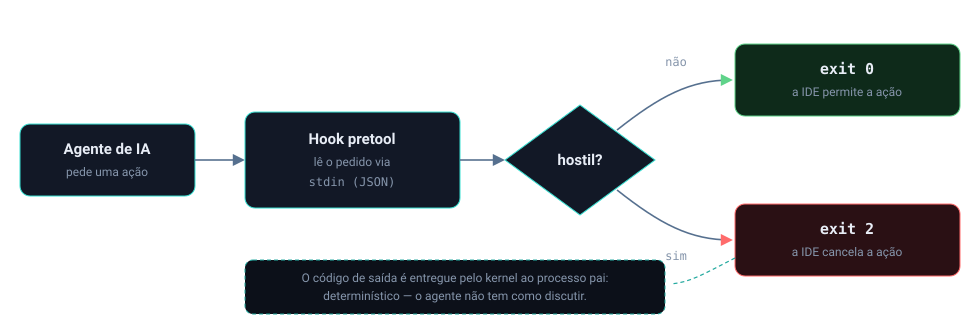
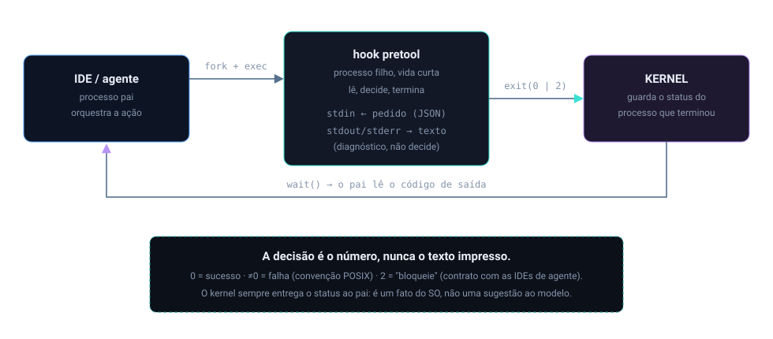

Início/Conceitos/1 · Contrato POSIX e o exit 2
conceito 1 · sistema operacionalContrato POSIX e o exit 2
O número 2 que o Nemesis devolve quando bloqueia não saiu do nada: ele é produto direto do modelo de processos POSIX. A escolha desse número tem um motivo: ele virou um contrato que as IDEs entendem sem ambiguidade.
Todo processo Unix termina devolvendo um inteiro ao pai: o exit code. Zero é sucesso, diferente de zero é falha. As IDEs de agente combinaram que, no hook que roda antes da ação, sair com exit 2 significa "bloqueie esta ação". O hook lê o pedido do agente pela entrada padrão (stdin), decide, e quando é hostil chama exit(2). É determinístico: não é um pedido, é o fim do processo com um veredito.

Do zero: de onde vem o exit code
No modelo POSIX, um processo é criado por fork/exec e, quando morre, entrega ao processo pai um status via wait. Desse status o pai lê um byte: o código de saída. A convenção é antiga e universal: 0 quer dizer "deu certo", qualquer valor de 1 a 255 quer dizer "deu errado", e cada programa pode atribuir significados aos códigos diferentes de zero. O agente conversa com o hook por três descritores padrão: entrada (stdin), saída (stdout) e erro (stderr). O hook recebe o pedido em stdin como JSON, processa, e o que importa para a decisão não é o que ele imprime, e sim com qual número ele termina.

fork/exec, stdin com o pedido, e o veredito voltando ao pai via wait().Por que importa
O enforcement precisava de um sinal que o agente não pudesse "convencer" a mudar. Texto no prompt é probabilístico: o modelo pode ignorar. Já o código de saída de um processo é um fato do sistema operacional. Quando a IDE combina "se o hook pré-ação sair com 2, a ação é cancelada", o controle deixa de depender da boa vontade do modelo e passa a depender do kernel entregar o status do processo, o que ele sempre faz.
Como se correlaciona
Esse contrato amarra tudo o que vem depois. O pretool é o processo que lê o stdin e decide; o desenho fail-closed garante que até um erro interno termine em exit 2 em vez de deixar passar; e a camada de kernel usa o análogo no nível do kernel, devolver -EPERM em vez de 0, para negar exec. O exit code é a forma userspace do mesmo princípio: comunicar "negado" por um canal que não se discute.
Como o Nemesis aplica
O ponto de bloqueio é uma função única que registra o motivo no ledger e encerra o processo com 2. Só registra na telemetria quando o motivo é de segurança (o vocabulário das mensagens NEMESIS), porque erro operacional do hook não é proteção.
if reason.contains("NEMESIS ") {
nemesis_defender::violations_log::append("pretool", reason);
}
std::process::exit(2);E onde o Nemesis cria um processo filho, a API POSIX é usada com os três descritores explicitamente desligados, exatamente o modelo de fork/exec mais redirecionamento de stdio:
std::process::Command::new(&exe)
.arg("--daemon")
.current_dir(&project_root)
.stdin(std::process::Stdio::null())
.stdout(std::process::Stdio::null())
.stderr(std::process::Stdio::null())
.spawn()Decisões e limites
O "2 = bloqueado" não é lei do POSIX, é convenção das IDEs de agente: o POSIX só garante 0 = sucesso e ≠0 = falha. O contrato depende de a IDE honrar o 2 como cancelamento, e é exatamente por isso que esse comportamento é validado no pentest, com o hook conectado de verdade. O papel de cada canal também é separado: o que o hook imprime em stdout/stderr é diagnóstico para quem lê; a decisão é só o código de saída.
Um processo que trava não devolve código nenhum. O hook é síncrono e rápido, com desenho fail-closed, justamente para nunca ficar pendurado sem veredito.
Auto-checagem
Por que o código de saída é mais confiável que uma instrução no prompt?
Porque é um fato do sistema operacional, entregue pelo kernel ao processo pai, e não uma sugestão que o modelo pode ignorar. O agente não tem como "argumentar" contra o término de um processo com status 2.
Por onde o hook recebe o pedido do agente?
Pela entrada padrão (stdin), como JSON. Ele lê, decide, e comunica o veredito pelo código de saída, não pelo texto impresso.
O "2" é exigido pelo POSIX?
Não. POSIX só fixa 0 = sucesso e ≠0 = falha. O 2 como "bloqueado" é a convenção combinada com as IDEs de agente; é por isso que ele é tratado como contrato e validado na prática.
Para ir além
Citações verificadas contra o repositório. Voltar ao índice.